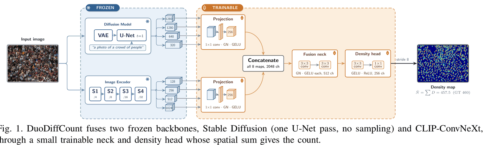
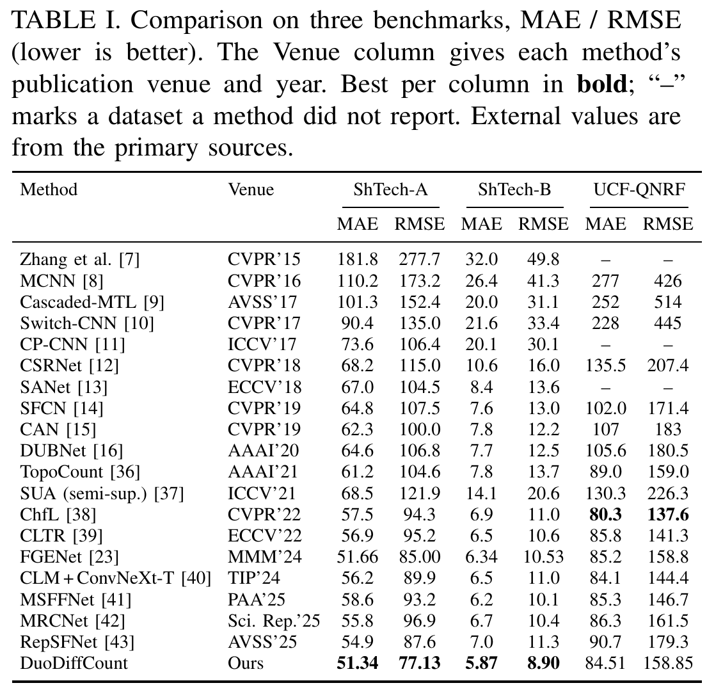
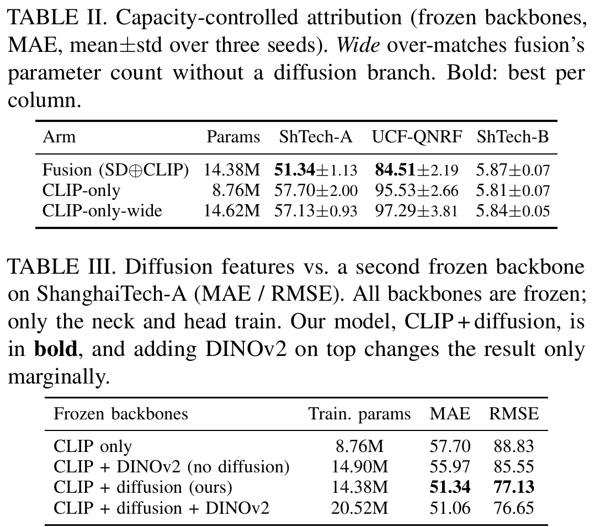
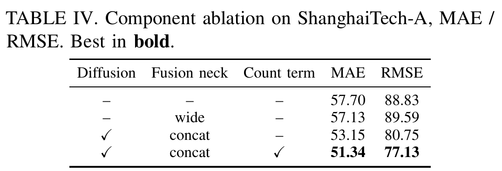
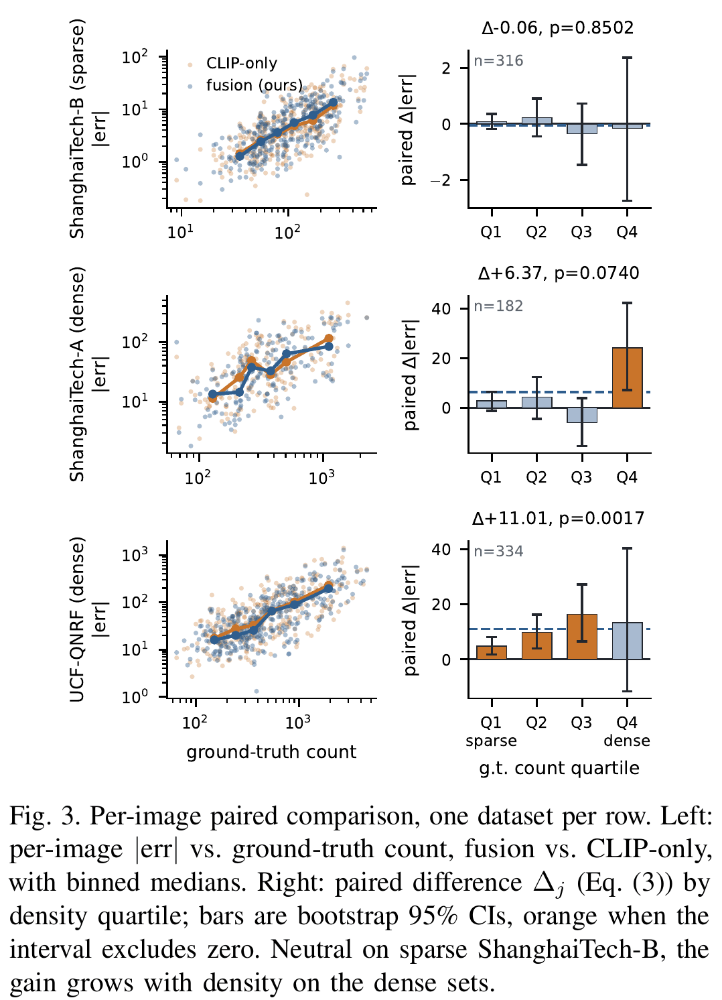
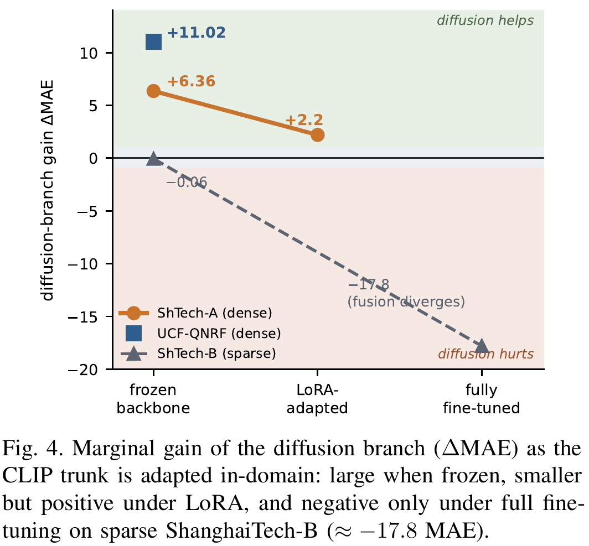
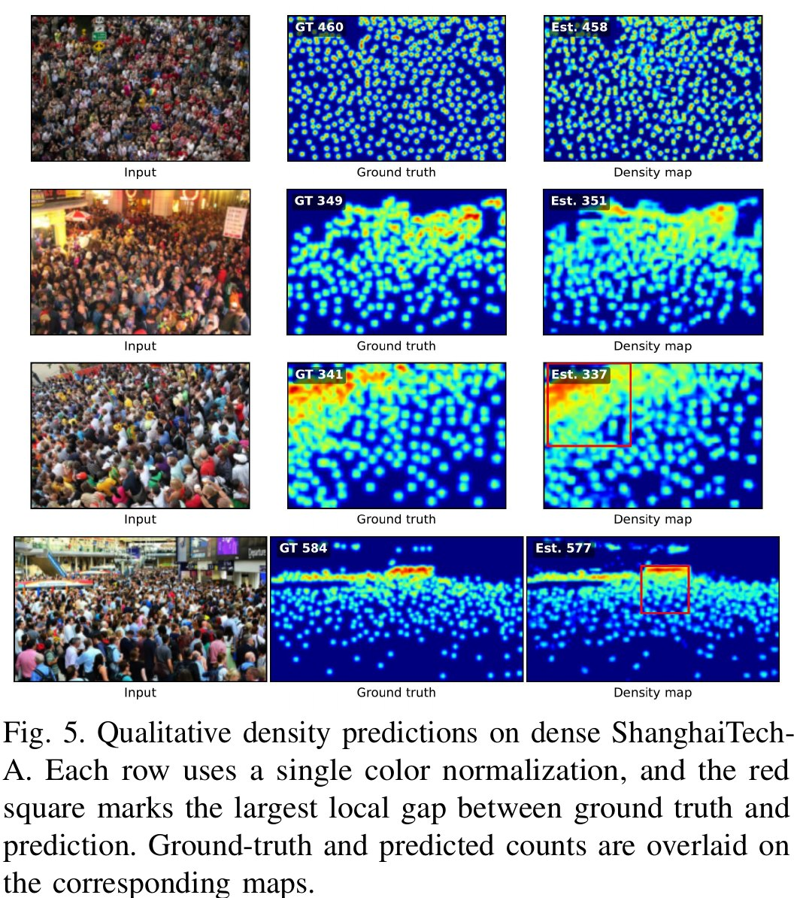
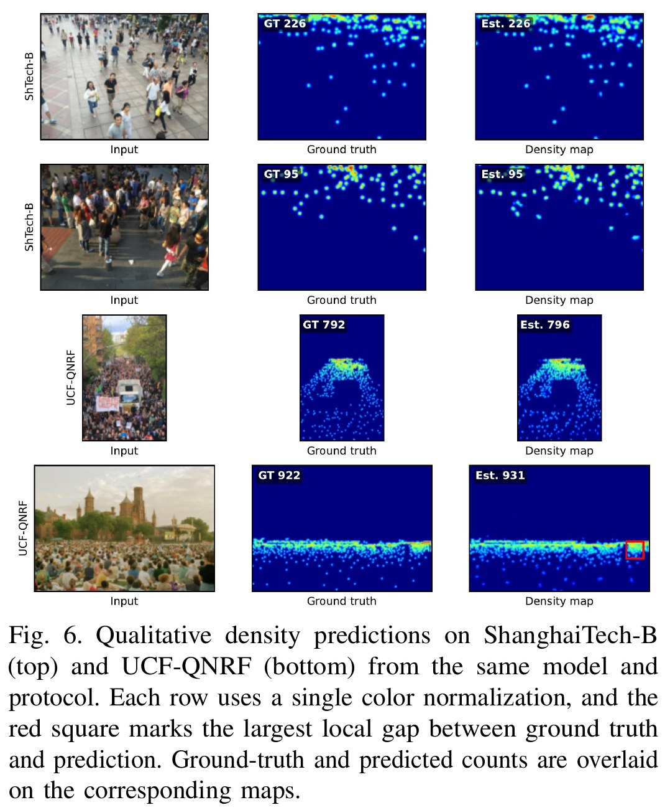

DuoDiffCount: frozen diffusion features for crowd counting
Muhammad Ridha Agam, Chi-Chia Sun, Hui-Kai Su, Jun-Wei Hsieh
Counting people in a dense crowd means finding hundreds of small, overlapping heads, learned from only a few hundred training images. DuoDiffCount asks whether the knowledge inside a frozen Stable Diffusion model helps with that. It does, and most of all where crowds are densest. The paper received the Honorable Mention Paper Award (佳作論文獎) at CVGIP 2026.
- Two frozen backbones, Stable Diffusion 1.5 and CLIP-ConvNeXt, feed a 14.38M-parameter trainable neck and density head. One deterministic pass, no test-time augmentation.
- Lowest MAE and RMSE among the compared counters on ShanghaiTech-A (51.34 / 77.13) and ShanghaiTech-B (5.87 / 8.90), and competitive on UCF-QNRF (84.51 / 158.85).
- The diffusion branch adds information, not capacity: it cuts MAE by 6.36 on ShanghaiTech-A and 11.02 on UCF-QNRF, and a parameter-matched control does not close the gap.
The idea in one picture

How it works
Frozen diffusion branch. The image is encoded by the Stable Diffusion 1.5 VAE and passed once through the U-Net at timestep t=1 with a fixed prompt, “a photo of a crowd of people”. Four decoder feature maps (1280, 1280, 640 and 320 channels) are tapped. The sampler never runs, so there is no randomness at inference.
Frozen CLIP branch. The same crop goes through a CLIP ConvNeXt-Base trunk (laion2B weights), giving four stage maps with 128 to 1024 channels. CLIP separates heads from background; the diffusion features describe how visual mass fills a scene, including occlusion and the texture of dense clutter.
Trainable neck and head. Each of the eight maps is projected to 256 channels, aligned to a stride-8 grid and concatenated. Two 3×3 convolutions and a density head produce a non-negative density map, and its sum is the count. Only these 14.38M parameters are trained, which fits on a single 24 GB GPU.
The results
Against a representative set of density-map counters, DuoDiffCount has the lowest MAE and RMSE on both ShanghaiTech splits. On UCF-QNRF a single frozen-feature pass stays competitive but trails the strongest trained counter, ChfL.

Diffusion features or extra parameters?
Adding a branch also adds trainable parameters, so a gain could just be capacity. The paper tests this with three arms under one locked recipe, three seeds each: the full model, a CLIP-only model, and a CLIP-only model widened to slightly more parameters than the full model. The wide control barely moves (57.13 vs 57.70 MAE on ShanghaiTech-A) while the diffusion branch reaches 51.34. Swapping in a second frozen backbone, DINOv2, closes only about 1.7 MAE of the gap.


Where the gain lives
Per-image paired comparisons show the benefit grows with crowd density. On UCF-QNRF it peaks in the densest quartiles and is statistically significant (Wilcoxon p = 0.0017). On ShanghaiTech-A it concentrates in the densest images. On sparse ShanghaiTech-B the two models are indistinguishable (Δ = −0.06, p = 0.85): there, CLIP already isolates each head.

Why keep the backbones frozen
As the CLIP trunk is adapted to the crowd data, the diffusion branch's benefit shrinks: large when frozen, still positive under light LoRA adaptation (+2.2 MAE), and negative under full fine-tuning on sparse ShanghaiTech-B (about −17.8 MAE). A frozen generative prior largely substitutes for in-domain backbone training, so DuoDiffCount keeps both backbones frozen.

What it looks like


Limitations
Most of the remaining error is in the extreme-density tail, scenes above roughly a thousand people, where heads fall below the stride-8 grid. Closing it will take higher-resolution fusion or adaptive tiling rather than a heavier neck. The model outputs only an aggregate count, never identities or tracks, and the paper recommends keeping inference on device and retaining no frames.